체중, 혈압, 혈당, 콜레스테롤이 걱정되기 시작한 분을 위한 안내예요. 좋은꿈참사랑한의원에서 저는 수치만 보지 않고 식욕과 식사 시간, 잠, 활동의 리듬부터 여쭤요. 복용 중인 약은 임의로 중단하지 않습니다.

숫자가 아니라 생활을 바꿉니다
체중은 먹는 양과 움직이는 양만으로 정해지지 않아요. 잠, 스트레스, 식욕 리듬, 복용 중인 약, 건강 상태가 같이 작용하거든요. 무작정 굶으면 오래 버티기 어렵고, 줄인 식사량을 못 지켜서 다시 늘어나는 경우가 많아요. 사람이 원래 그래요. 그래서 저는 오래 지킬 수 있는 생활 구조를 같이 만드는 데 집중해요.
이런 분께
- 적게 먹는데도 체중이 그대로라 고민인 분
- 밤마다 야식이 당기는 분
- 다이어트와 요요를 반복해 온 분
- 잠을 설치면 식욕이 늘어나는 분
이렇게 진행합니다
한약이 필요하다고 판단되면 처방하는데, 일부 약재는 가슴 두근거림이나 불면 같은 반응이 있을 수 있어요. 그래서 혈압과 수면 상태를 살피면서 신중하게 정합니다.
- 식사 시간과 내용, 수면, 활동량을 여쭙습니다.
- 필요하면 인바디 770 체성분 측정과 혈압 등 기본 상태를 확인합니다.
- 진맥과 함께 소화·체온·대변 상태를 살핍니다.
- 진행 중 몸의 반응을 확인하며 조절합니다.
대사증후군은 무엇인가요?
대사증후군은 복부 비만, 높은 혈압, 높은 공복 혈당, 높은 중성지방, 낮은 HDL 콜레스테롤 가운데 여러 가지가 함께 있는 상태예요. 하나하나는 경계선이어도 여럿이 모이면, 생활 리듬을 한번 점검해 볼 신호로 저는 봐요.
검진 결과지에서 허리둘레, 혈압, 공복혈당, 중성지방, HDL 콜레스테롤 칸을 먼저 확인해 보세요. 어느 항목이 경계에 있는지 알면 생활에서 무엇부터 바꿀지 정하기가 쉬워지거든요.
상담에서 자주 듣는 이야기
체중이 늘어난 시기와 생활이 바뀐 시기가 겹치는 경우가 많아요. 이직, 수험 준비, 출산, 은퇴처럼 생활이 바뀐 때를 떠올려 오시면 얘기가 구체적이 됩니다.
- 검진에서 '경계'라는 말을 처음 들었을 때
- 야식과 늦은 저녁이 습관이 되었을 때
- 잠이 부족한 날 식욕이 커질 때
- 체중이 줄다가 멈춘 정체기
먼저 이렇게 여쭙니다
- 하루 식사 시간과 먹는 순서
- 잠드는 시각과 수면 시간
- 건강검진 결과지와 복용 중인 약
- 진짜 배고픔과 '입이 심심한' 느낌의 차이
- 물은 하루에 얼마나 드시나요?
생활에서 먼저 해 볼 것
무리하게 굶거나 한 가지 음식만 드시는 방법은 오래 이어 가기 어렵고 몸에 부담이 될 수 있어서 저는 권하지 않아요. 작은 습관 하나를 2주 넘게 이어 가는 게 목표예요.
- 채소·단백질을 먼저 먹고 밥은 나중에
- 저녁은 잠들기 3시간 전에 마치기
- 식후 10~15분 걷기
- 짠 국물은 건더기 위주로 먹기
한의원에서 함께 살피는 것
필요하다고 판단될 때는 인바디 770으로 체성분을 재고, 당화혈색소 검사기로 최근 혈당 흐름을 확인해요. 그래도 숫자가 상담을 대신하지는 않아요. 식욕·소화·잠과 같이 놓고 보는 참고 자료거든요. 저는 당뇨·대사증후군·다이어트를 주요 진료 분야로 보고 있어요.
한의학에서는 식욕을 이렇게 함께 봅니다
한의학에서는 식욕과 체중을 소화의 힘, 몸의 온기, 잠, 마음의 긴장과 함께 봐요. 그래서 저는 '얼마나 드시는가'만큼 '언제, 어떤 기분일 때 드시는가'를 꼭 여쭤요. 식후 졸림, 붓기, 손발 냉기, 대변 상태를 같이 살피는 것도 그래서예요.
- 스트레스를 받을 때 단 것이 당기는지
- 아침을 거르고 저녁에 몰아 먹는지
- 식후에 졸리거나 몸이 붓는지
이럴 때는 다른 진료를 먼저 받으세요
- 가슴 통증이나 숨참이 있을 때
- 한쪽 팔다리 힘 빠짐, 말 어눌함이 생길 때: 즉시 응급실
- 심한 갈증, 잦은 소변, 체중 급감이 함께 있을 때
- 약을 먹는데도 혈압·혈당이 계속 높을 때: 처방 의료기관 먼저
좋은꿈참사랑한의원 진료는 이렇게 진행됩니다
첫 방문은 접수, 상담, 진찰, 치료, 귀가 전 안내 순서예요. 다음 방문에서는 지난번 기록과 생활 변화를 이어서 봐요. 혈압·혈당·콜레스테롤 약은 처방한 의사와 상의 없이 줄이거나 끊지 않습니다.
인바디와 당화혈색소 검사는 모든 분께 하지 않아요. 진찰해 보고 필요하다고 판단될 때 안내해 드려요.
상도동·노량진에서
학원과 사무실이 많은 노량진·상도동 생활권에서는 늦은 저녁, 배달 야식, 오래 앉아 있는 시간이 대사 리듬에 영향을 주기 쉽습니다. 상도동의 언덕길은 식후 걷기 코스가 되기도 하지만 무릎이 불편하면 평지를 고르세요. 좋은꿈참사랑한의원은 상도역 3번 출구에서 약 400m 거리이며 평일 저녁 8시까지 진료합니다. 노량진역 3번 출구에서는 마을버스 동작01번을 타고 신동아리버파크 정류장에서 내리면 됩니다.
자주 묻는 질문
다이어트 한약은 식욕 억제제인가요?
처방 구성은 사람마다 다릅니다. 일부 약재는 심장이 두근거리거나 잠이 안 오는 반응이 있을 수 있어, 혈압과 수면 상태를 확인하며 신중히 처방합니다.
왜 다시 살이 찌나요?
급하게 줄인 식사량은 오래 유지하기 어렵습니다. 수면과 식사 리듬을 함께 바꾸는 것이 중요합니다.
잠이 다이어트와 관련이 있나요?
수면이 부족하면 식욕 조절이 흔들릴 수 있습니다. 그래서 다이어트 상담에서도 잠을 꼭 여쭙니다.
상도동에서 다이어트 상담을 받을 수 있는 한의원이 있나요?
좋은꿈참사랑한의원(서울 동작구 만양로2길 2 신성빌딩 3층·5층)에서 체중과 식욕 상담을 합니다. 무리한 절식은 권하지 않고 식사·잠·활동의 리듬을 함께 살핍니다.
한의원에서 인바디 검사를 할 수 있나요?
필요하다고 판단될 때 인바디 770으로 체수분·근육량·체지방을 측정합니다.
당화혈색소는 무엇을 알려 주나요?
최근 2~3개월의 평균적인 혈당 흐름을 반영하는 수치입니다. 진단과 약 처방이 필요하면 내과 진료를 안내합니다.
혈압약을 먹고 있어도 한약 상담이 가능한가요?
가능합니다. 복용 중인 약 이름을 알려 주시면 함께 확인하며, 약은 임의로 중단하지 않습니다.
건강검진 결과지를 가져가야 하나요?
있으면 도움이 됩니다. 이전 수치와 비교하며 생활 리듬을 이야기하기 쉬워집니다.
야식을 끊기 어려운데 상담할 수 있나요?
네. 야식이 생기는 시각과 낮의 식사, 잠의 리듬을 먼저 여쭙고 현실적인 방법을 함께 찾습니다.
주말에도 상담받을 수 있나요?
토·일·공휴일 오전 9시 30분부터 오후 3시까지 진료합니다.
한약을 먹으면 살이 빠지나요?
체중 변화는 사람마다 다르고 결과를 약속드릴 수 없습니다. 진찰 후 식사·잠·활동의 리듬과 함께 한약이 필요한지 상담합니다.
평일 저녁에도 상담받을 수 있나요?
평일은 오후 8시까지 진료합니다(점심 13:00~14:00). 네이버 예약이나 02-815-7510으로 예약하실 수 있습니다.
감수: 좋은꿈참사랑한의원 대표원장 이종호 · 마지막 확인 2026-11-27 · 일반적인 건강 정보이며 진단·치료를 대신하지 않습니다.
대사증후군·식욕 글 모아 보기 (83편)

연말 건강검진에서 콩팥 기능 수치(크레아티닌·사구체여과율)가 경계라는 말을 들었을 때는 무엇부터 살피나요?
크레아티닌과 사구체여과율은 콩팥이 노폐물을 걸러 내는 힘을 가늠하는 숫자로, 검사 전날의 술·고기·격한 운동·물 부족, 근육량, 복용 중인 약에 따라 한 번쯤 경계로 나올 수 있습니다. 한 번의 결과로 판단하지 않고, 결과지의 소변 단백·혈압·혈당을 함께 본 뒤 병원 안내에 맞춰 다시 확인하는 것이 먼저입니다. 그사이 진통제 습관, 물, 짠 음식, 혈압과 혈당 기록을 정리해 두면 다음 상담이 쉬워집니다.
수정 2026-11-27

집에서 재는 체지방계와 한의원 인바디 770의 체지방률·근육량이 다르게 나올 때는 어느 쪽을 기준으로 보나요?
집 체지방계와 인바디 770은 둘 다 몸에 약한 전류를 흘려 체성분을 추정하지만 전극이 닿는 자리와 계산 방식, 항목의 뜻이 달라 숫자가 그대로 맞지 않는 경우가 많습니다. 체중은 집에서 같은 조건으로, 체성분은 같은 기계로 같은 조건에서 견주어 몇 주의 흐름을 보세요. 애쓰지 않았는데 체중이 빠지거나 붓기와 함께 숨이 차다면 먼저 진료를 받으세요.
수정 2026-11-27

요산 수치가 높은 편인데 연말 회식에서 고기·맥주·해산물이 이어질 때는 어떻게 조절하나요?
검진에서 요산 수치가 높은 편이라고 들었는데 연말 회식에서 고기와 내장류, 맥주, 굴·조개 같은 해산물, 달달한 음료가 이어진다면, 회식을 다 피하기보다 술의 종류와 잔 수, 안주 고르기, 물 마시기, 다음 날 회복을 미리 정해 두는 편이 현실적입니다. 요산 약을 드신다면 회식 날에도 임의로 거르지 않고, 엄지발가락이나 발목이 갑자기 붉게 붓고 심하게 아프면 진료를 먼저 받으세요.
수정 2026-11-27

다이어트를 할 때마다 요요가 오고 정체기에서 멈춰 버릴 때는 무엇을 살피나요?
열심히 뺀 체중이 몇 달 만에 돌아오고, 어느 순간부터 저울 숫자가 꿈쩍하지 않을 때가 있습니다. 요요와 정체기가 왜 생기는지, 생활에서 무엇을 먼저 바꾸고 한의원에서는 무엇을 함께 살피는지 정리했습니다.
수정 2026-11-27

종아리 핏줄이 울퉁불퉁 튀어나오고 저녁마다 다리가 무거운 하지정맥류는 어떻게 살피나요?
오래 서 있으면 종아리가 묵직하고 핏줄이 구불구불 튀어나와 보일 때가 있습니다. 하지정맥류가 왜 생기는지, 단순 부종이나 근육 뭉침과 어떻게 다른지, 혈관 진료와 함께 생활에서 무엇을 살피는지 정리했습니다.
수정 2026-11-27

다이어트를 하지 않았는데 체중이 계속 줄 때는 어떤 검사부터 받고 무엇을 살피나요?
일부러 줄이지 않았는데 체중이 몇 달째 빠지면 반가움보다 걱정이 앞섭니다. 의도하지 않은 체중 감소를 어떻게 재고 기록하는지, 어떤 검사부터 받는지, 그 뒤 한의원에서 식욕과 소화, 잠을 어떻게 살피는지 정리했습니다.
수정 2026-11-27

아무리 먹어도 살이 붙지 않는 마른 체질, 체중을 늘리려면 무엇부터 살피나요?
많이 먹어도 체중이 늘지 않고 쉽게 지치는 마른 체질은 먹는 양보다 소화, 끼니 리듬, 잠, 근육을 함께 봐야 합니다. 체중이 잘 늘지 않는 이유와 생활에서 바꿔 볼 것, 한의원에서 살피는 부분을 정리했습니다.
수정 2026-11-27

갑상선 결절이 있다는 말을 들은 뒤, 추적 검사와 생활은 어떻게 살피나요?
건강검진 초음파에서 갑상선 결절이 보인다는 말을 들으면 마음이 덜컥 내려앉습니다. 결절의 뜻과 추적 검사 흐름, 내분비내과와 함께 가는 순서, 한의원에서 함께 살필 수 있는 잠과 긴장을 정리했습니다.
수정 2026-11-26

갑상선 기능 저하나 항진이 있을 때 한의원 진료는 어떻게 함께 살피나요?
갑상선 기능 저하는 피로·추위·체중 증가로, 항진은 두근거림·더위·체중 감소로 나타나기 쉽습니다. 진단과 호르몬 약은 내분비내과의 몫이고, 한의원에서는 약을 유지하며 잠·소화·체온 같은 남은 불편을 함께 봅니다.
수정 2026-11-26

콜레스테롤 약을 먹기 시작한 뒤 근육이 쑤시고 뻐근할 때는 어떻게 살피나요?
콜레스테롤 약을 드시면서 허벅지나 어깨가 쑤신다면 약 때문인지, 운동이나 자세, 다른 이유 때문인지 나눠 볼 필요가 있습니다. 약은 처방한 선생님과 상의해 정하고, 한의원에서 함께 살피는 부분을 정리했습니다.
수정 2026-11-26

잠이 부족하면 체중과 혈당에도 영향이 있나요?
잠이 부족하면 식욕이 커지고 체중과 혈당 관리가 어려워지는 경향이 있다고 알려져 있습니다. 그래서 체중이나 혈당이 걱정될 때도 잠드는 시각과 저녁 식사 시각을 함께 놓고 생활 리듬 속에서 살핍니다.
수정 2026-11-26
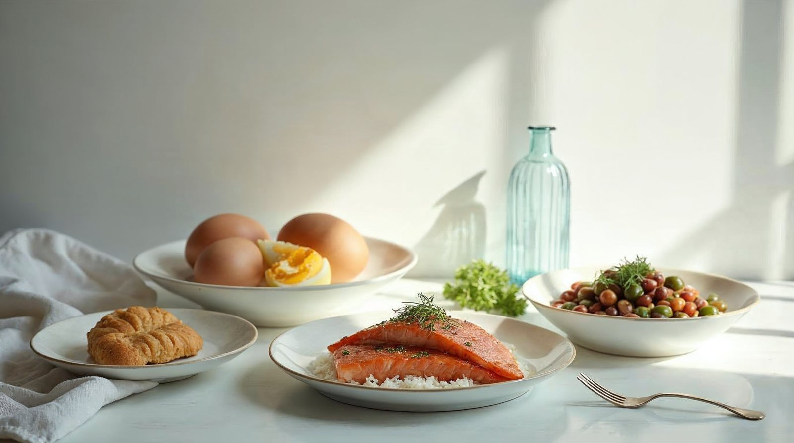
다리 힘이 빠지고 걸음이 느려지는 근감소증은 어떻게 살피나요?
나이가 들며 근육의 양과 힘이 함께 줄어드는 근감소증은 의자에서 일어나기, 걸음 속도, 손아귀 힘에서 먼저 드러납니다. 단순한 노화와 무엇이 다른지, 식사와 움직임, 한의원 진료를 어떻게 함께 살피는지 정리했습니다.
수정 2026-11-26
사정이 너무 빨라 고민될 때(조루)는 어디서부터 이야기하고 무엇을 살피나요?
사정이 생각보다 빨라 부부 관계가 부담스러워지면 누구에게도 말하기 어렵습니다. 조루가 어떤 상태인지, 긴장과 몸의 흐름이 어떻게 맞물리는지, 비뇨의학과와 함께 가는 순서와 한의원에서 함께 살피는 부분을 정리했습니다.
수정 2026-11-27

당뇨 전단계·공복혈당장애라는 말을 들었을 때 무엇부터 살피나요?
당뇨 전단계는 공복혈당·당화혈색소가 정상보다 높지만 당뇨 기준에는 아직 닿지 않은 상태입니다. 숫자의 흐름과 잠·식사 시각·활동을 함께 보고, 갈증·잦은 소변·체중 감소가 있으면 내과 확인이 먼저입니다.
수정 2026-11-26

뼈가 약해졌다는 골다공증 진단을 받았을 때 생활과 한의원 진료는 어떻게 함께 살피나요?
골다공증은 아무 느낌 없이 진행하다가 넘어지거나 삐끗했을 때 뼈가 부러지면서 알게 되는 경우가 많습니다. 처방받은 약은 그대로 이어 가면서 낙상을 줄이는 생활, 식사와 햇볕, 움직임을 한의원에서 어떻게 함께 살피는지 정리했습니다.
수정 2026-11-26

비만이라는 말을 들었을 때 체중보다 먼저 무엇을 살피나요?
비만은 체중계 숫자 하나보다 체지방이 어디에 얼마나 쌓였는지, 잠·식사 시각·근육량이 어떤지를 함께 보는 상태입니다. 굶어서 빼는 방식이 왜 오래가기 어려운지, 진료실에서는 무엇을 재고 묻는지 정리했습니다.
수정 2026-11-27
아침마다 눈두덩과 얼굴이 퉁퉁 붓는 얼굴 부종은 무엇을 나눠 살피나요?
아침에 거울을 보면 눈두덩과 볼이 부어 있다가 오후에 가라앉는 얼굴 부종은 전날 저녁 식사, 잠, 베개 높이, 생리 주기, 갑상선과 콩팥 상태 등 여러 갈래에서 옵니다. 무엇을 나눠 보고 생활에서 무엇부터 바꿀지 정리했습니다.
수정 2026-11-27

갱년기 무렵 먹는 양은 그대로인데 뱃살과 체중이 늘어날 때는 무엇을 살피나요?
갱년기 무렵에는 식사량이 같아도 배와 허리에 살이 붙고 체중이 쉽게 늘어납니다. 왜 이 시기에 몸이 달라지는지, 열감·잠·근육과 어떻게 엮여 있는지, 생활과 한의원에서 무엇을 함께 살피는지 정리했습니다.
수정 2026-11-27
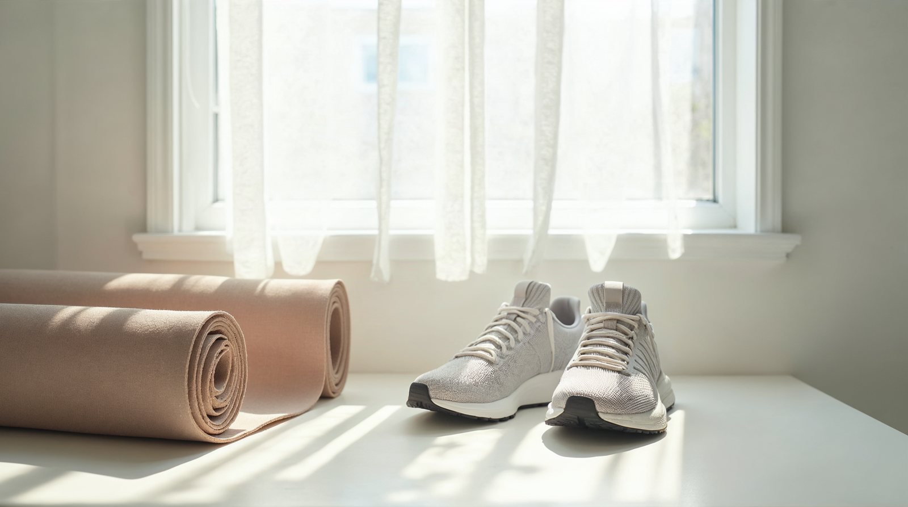
40~50대 남성이 기운과 의욕이 떨어지고 잠·뱃살이 달라질 때(남성 갱년기)는 무엇을 살피나요?
남성 갱년기는 나이가 들며 남성호르몬이 서서히 줄면서 피로·의욕 저하·잠·뱃살·성기능 변화가 함께 오는 상태입니다. 혈액 검사는 비뇨의학과와 상의하고, 잠·식사·움직임·마음을 함께 살핍니다.
수정 2026-11-26
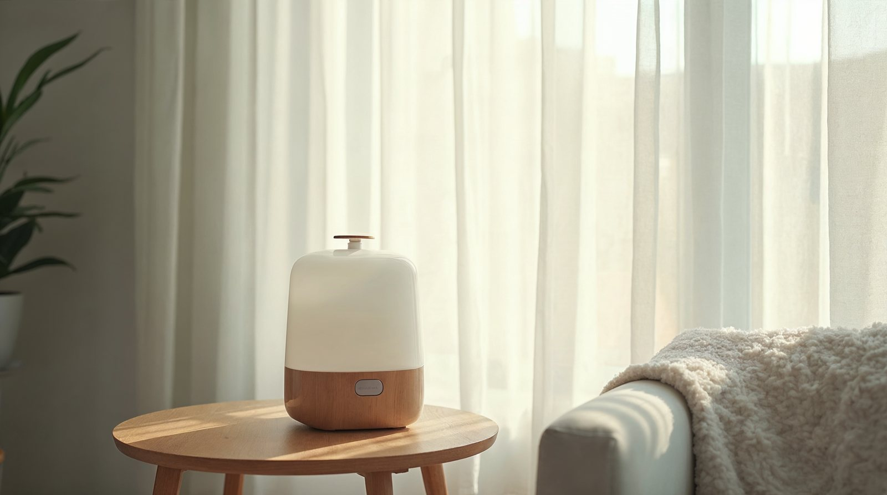
루푸스·쇼그렌 같은 자가면역질환으로 류마티스내과 치료 중일 때, 일상은 어떻게 살피나요?
루푸스나 쇼그렌 증후군으로 류마티스내과 약을 드시는 동안에도 햇빛, 피로, 잠, 건조, 감기 같은 생활의 작은 변수가 컨디션을 흔듭니다. 약은 처방대로 이어 가면서 한의원에서 함께 살필 수 있는 부분을 정리했습니다.
수정 2026-11-26
예전보다 성욕이 눈에 띄게 줄었을 때는 몸과 마음의 어떤 부분을 살피나요?
관계에 대한 마음이 예전 같지 않으면 나에게 문제가 있나 싶어 혼자 고민하게 됩니다. 성욕 감소가 피로, 잠, 호르몬, 약, 마음, 관계와 어떻게 맞물리는지, 어떤 진료과와 함께 살피는지 정리했습니다.
수정 2026-11-27

혈압이 늘 낮게 나오고 쉽게 어지럽고 지칠 때, 저혈압은 무엇을 살피나요?
검진 때마다 혈압이 낮다는 말을 듣고, 아침에 일어나기 힘들거나 오래 서 있으면 핑 도는 분이 있습니다. 저혈압이 왜 생기는지, 기립성 어지럼과 어떻게 다른지, 생활과 한의원에서 무엇을 함께 살피는지 정리했습니다.
수정 2026-11-27

37도 초반의 미열이 몇 주째 이어질 때는 어떤 검사부터 받고 무엇을 살피나요?
열이라고 하기엔 낮고 괜찮다고 하기엔 찜찜한 미열이 몇 주째 이어지면 몸도 마음도 지칩니다. 체온 재는 방법과 기록, 먼저 받아 볼 검사, 검사 뒤 피로와 잠, 긴장을 한의원에서 어떻게 함께 살피는지 정리했습니다.
수정 2026-11-26
저녁마다 다리가 붓고 양말 자국이 깊게 남을 때, 부종은 무엇을 나눠 살피나요?
다리 붓기는 오래 서거나 앉은 생활, 짠 식사, 정맥 순환, 약, 심장·신장·갑상선 같은 여러 이유로 생깁니다. 한쪽인지 양쪽인지, 언제 붓는지를 나눠 보고 생활에서 할 일과 한의원에서 함께 살피는 부분을 정리했습니다.
수정 2026-11-26
인바디를 다시 잰 361명 기록, 숫자는 어떻게 움직였을까요?
본원에서 인바디를 2주 이상 간격으로 다시 잰 361명 기록을 이름 없이 모아 보면, 체중은 가운데 값으로 1.9kg 줄었고 줄어든 무게의 약 70%(가운데 값)가 체지방량이었습니다. 다만 4명 중 1명가량은 체중이 늘었고 골격근량은 3명 중 2명꼴로 조금 줄었습니다. 같은 결과를 기대할 수 있다는 뜻이 아닌 참고 자료입니다.
수정 2026-11-26
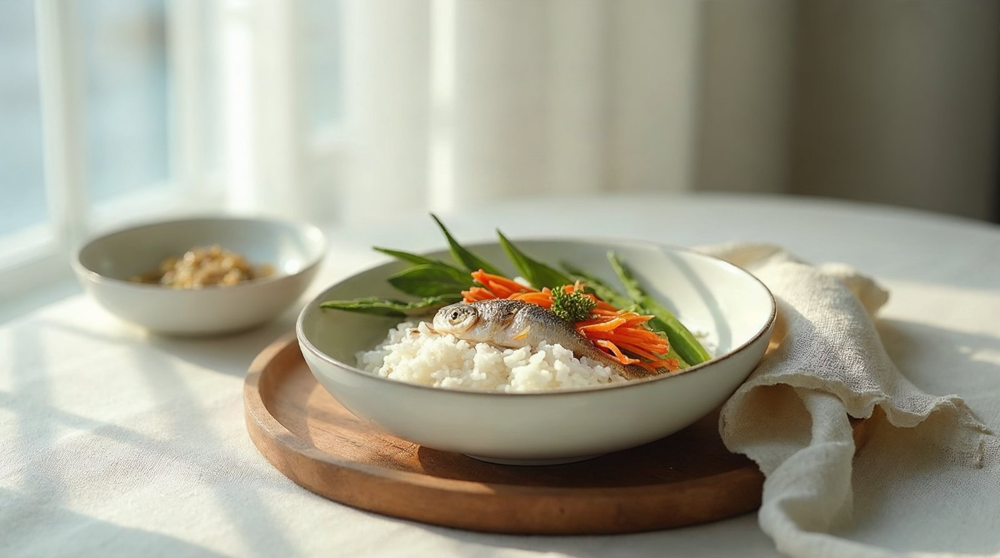
고혈압 약을 먹고 있을 때 한의원 진료와 생활 관리는 어떻게 함께 살피나요?
혈압약을 드시는 동안에도 잠, 식사, 짠맛, 움직임, 긴장은 혈압 숫자와 함께 움직입니다. 약은 내과 처방대로 이어 가면서 가정 혈압 기록과 생활 리듬을 한의원에서 어떻게 함께 살피는지 정리했습니다.
수정 2026-11-26
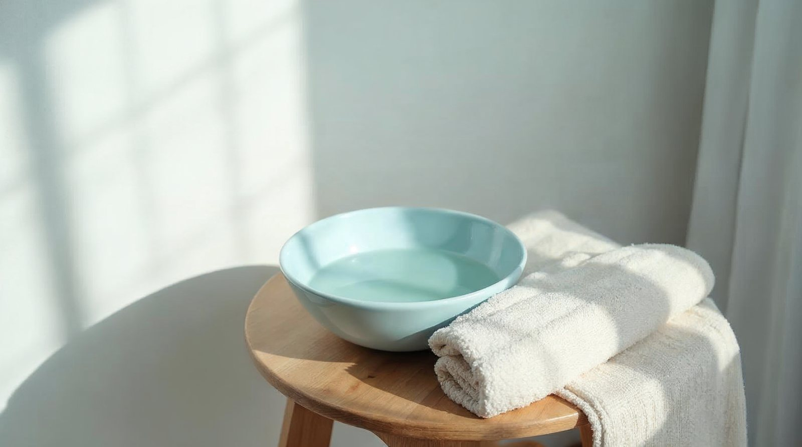
밤만 되면 손바닥과 발바닥이 화끈거려 이불 밖으로 내놓게 되는 수족번열은 어떻게 살피나요?
겨울에도 손발바닥이 달아올라 찬 벽에 대거나 이불 밖으로 내놓아야 잠이 드는 분이 있습니다. 수족번열이 왜 생기는지, 신경 저림이나 갱년기 열감과 어떻게 다른지, 생활과 한의원에서 무엇을 살피는지 정리했습니다.
수정 2026-11-27
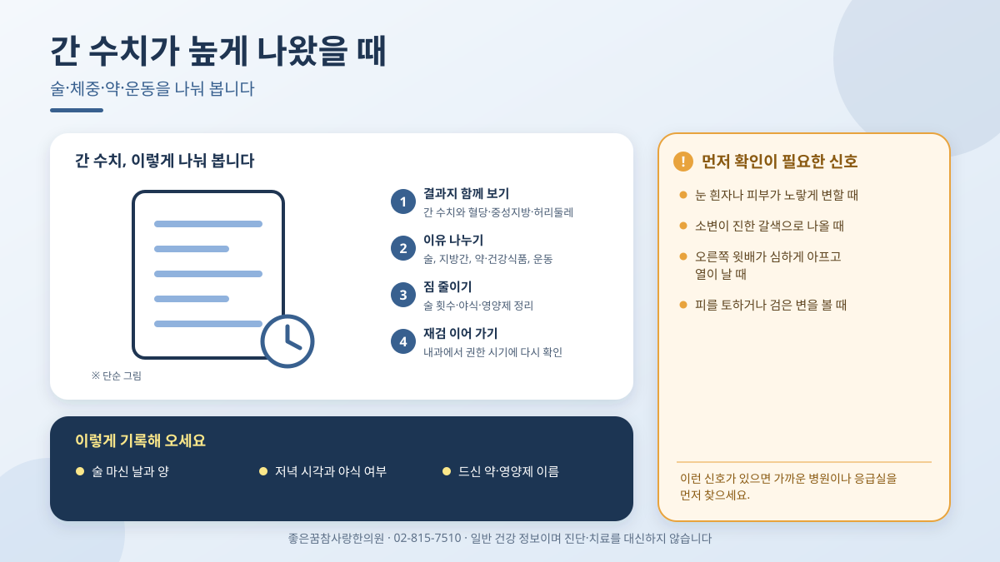
건강검진에서 간 수치(AST·ALT)가 높게 나왔을 때는 무엇을 나눠 살피나요?
검진 결과지에 간 수치가 높다고 표시되면 술, 체중, 드시는 약, 최근 운동과 몸살까지 함께 살펴야 합니다. 내과 재검과 추적은 그대로 이어 가면서 생활에서 무엇을 나눠 보고 한의원에서는 무엇을 함께 살피는지 정리했습니다.
수정 2026-11-26
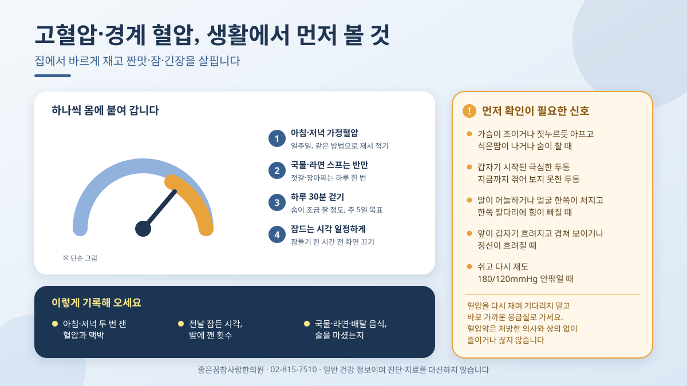
고혈압 진단을 받았거나 경계라는 말을 들었다면 생활에서 무엇부터 살피나요?
고혈압이나 경계 혈압이라는 말을 들었다면 집에서 혈압을 바르게 재 기록하고, 짠맛·잠·스트레스를 함께 살핍니다. 혈압약은 처방 의사와 상의 없이 끊지 않고, 가슴 통증·심한 두통·한쪽 힘 빠짐은 가까운 응급실이 먼저입니다.
수정 2026-11-26
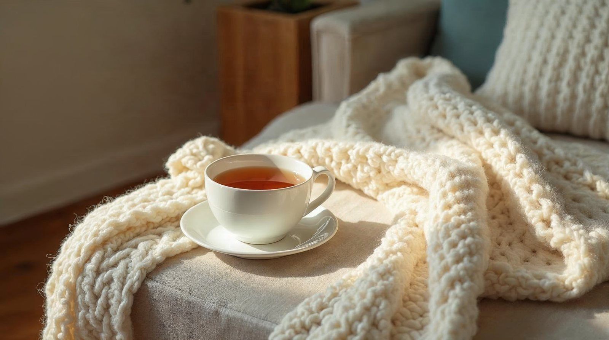
하시모토 갑상선염이라는 진단을 받았을 때, 피로와 붓기는 생활에서 어떻게 살피나요?
하시모토 갑상선염은 갑상선에 오래 머무는 염증으로, 기능이 서서히 떨어지며 피로·붓기·추위 타기가 따라오기도 합니다. 내분비내과 진료와 함께 잠, 식사, 움직임을 한의원에서 어떻게 살피는지 정리했습니다.
수정 2026-11-27
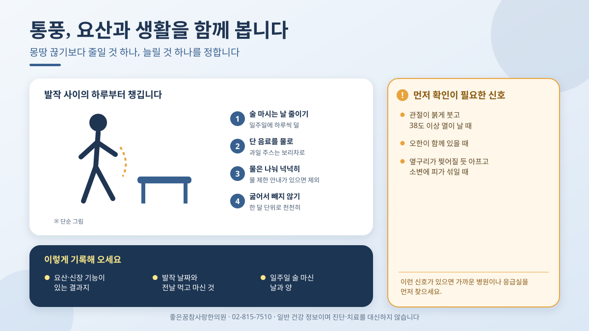
엄지발가락이 붓고 화끈거리는 통풍, 요산 수치와 함께 무엇을 살피나요?
통풍은 혈액 속 요산이 결정으로 쌓여 관절에 갑작스러운 염증을 일으키는 상태입니다. 발작 때 할 일과 발작 사이의 생활을 나눠 보고, 요산과 함께 혈압·혈당·체중 같은 대사 숫자도 함께 봅니다.
수정 2026-11-26

소변이 너무 자주 마려운 빈뇨, 물·카페인·방광 습관·혈당은 어떻게 나눠 살피나요?
한 시간이 멀다 하고 화장실을 찾게 되면 일도 외출도 마음 편히 하기 어렵습니다. 마시는 양과 카페인, 방광의 예민함, 혈당과 약, 긴장과 냉기를 나눠 보고 배뇨 일기로 내 소변 리듬을 찾는 방법을 정리했습니다.
수정 2026-11-26
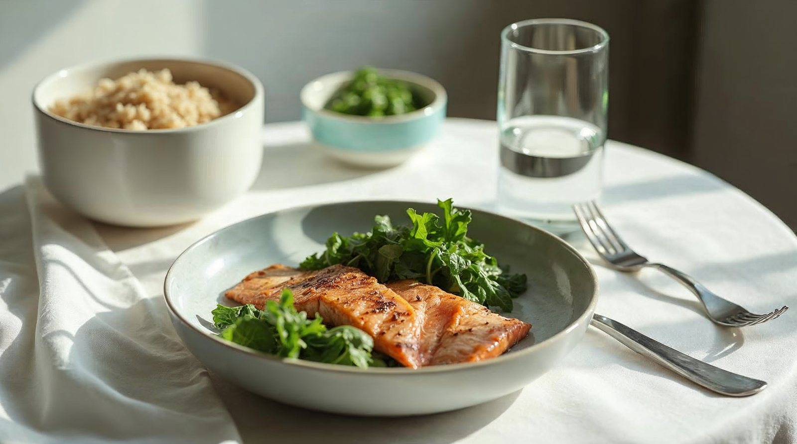
건강검진에서 지방간이라는 말을 들었을 때 생활에서 무엇을 점검하나요?
지방간은 대개 증상이 없어 검진에서 처음 알게 됩니다. 간 수치와 재검 안내를 먼저 따르고 술·단 음료·늦은 저녁·잠·드시는 약과 영양제를 함께 점검합니다. 눈이 노래지거나 소변이 짙어지면 내과 진료가 먼저입니다.
수정 2026-11-27

운동을 마치고 소변 색이 평소보다 진할 때는 무엇을 확인하고 어떻게 살피나요?
땀을 많이 흘린 운동 뒤 소변이 짙은 노란색이면 대개 물이 모자란 신호지만, 콜라색이나 붉은빛이라면 이야기가 달라집니다. 색과 양, 근육통을 나눠 보는 법과 물 마시기, 운동 강도 조절을 정리했습니다.
수정 2026-11-26
발기가 잘 되지 않거나 유지되지 않을 때(발기부전)는 무엇을 살피고 어디서부터 시작하나요?
발기가 예전 같지 않다는 고민은 말을 꺼내기 어렵지만 생각보다 흔합니다. 발기부전이 왜 생기는지, 혈관·당뇨·잠·긴장과 어떻게 엮여 있는지, 비뇨의학과 진료와 함께 생활과 한의원에서 무엇을 살피는지 정리했습니다.
수정 2026-11-27
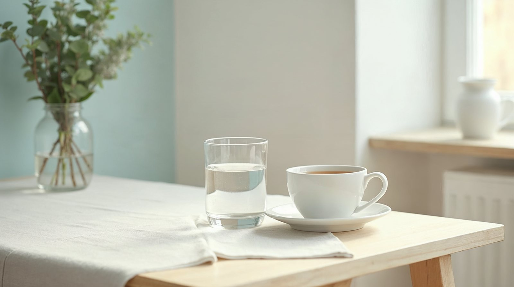
전립선 비대가 있다는 말을 들었을 때, 비뇨의학과 치료와 함께 생활에서는 무엇을 살피나요?
소변 줄기가 가늘어지고 밤에 자주 깨는 전립선 비대는 중년 이후 남성에게 흔합니다. 비뇨의학과 약과 검사를 바탕에 두고, 저녁 물과 술, 카페인, 오래 앉는 습관, 잠과 아랫배의 냉기를 함께 살피는 방법을 정리했습니다.
수정 2026-11-26

속상하거나 지친 날이면 배가 고프지 않아도 계속 먹게 되는 감정적 폭식은 어떻게 살피나요?
배가 고파서가 아니라 속상하고 지치고 허전해서 먹게 되는 감정적 폭식은 의지가 약해서 생기는 일이 아닙니다. 몸의 허기와 마음의 허기를 나눠 보는 법, 먹기 전 잠깐 멈추는 연습, 잠과 식사 리듬을 정리했습니다.
수정 2026-11-27

술을 줄이고 싶은데 마음처럼 되지 않을 때, 절주는 어떻게 시작하고 몸은 어떻게 살피나요?
술을 줄이겠다고 마음먹어도 퇴근길 한 잔, 주말 모임이 이어지면 다시 제자리로 돌아오기 쉽습니다. 절주를 작게 시작하는 방법과 술이 잠·속·간 수치에 주는 영향, 한의원에서 함께 살피는 부분을 정리했습니다.
수정 2026-11-27

당뇨 약을 먹고 있을 때 식사·움직임·잠과 한의원 진료는 어떻게 함께 살피나요?
당뇨 약을 드시는 동안에도 식사 순서, 식후 움직임, 잠, 긴장은 혈당 기록과 함께 움직입니다. 약은 내과 처방대로 이어 가면서 한의원에서 생활 리듬과 몸의 불편을 어떻게 함께 살피는지 정리했습니다.
수정 2026-11-26
회음부와 아랫배가 뻐근하고 소변 뒤에도 불편한 만성 전립선염(만성 골반통)은 어떻게 살피나요?
오래 앉아 있으면 회음부가 묵직하고 아랫배와 사타구니가 뻐근하며 소변 뒤에도 개운하지 않은 불편이 몇 달씩 이어지기도 합니다. 만성 전립선염이 왜 오래가는지, 비뇨의학과 진료와 함께 생활과 한의원에서 무엇을 살피는지 정리했습니다.
수정 2026-11-27
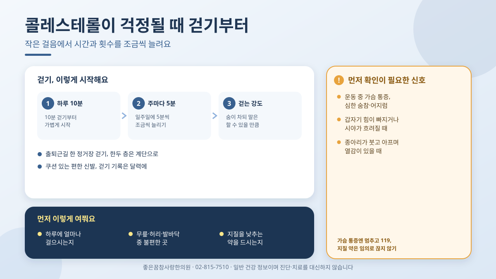
콜레스테롤 수치가 걱정될 때 운동은 어떻게 시작하면 좋나요?
콜레스테롤이 걱정되어 운동을 시작할 때는 하루 10분 걷기처럼 작게 시작해 시간과 횟수를 조금씩 늘립니다. 무릎·허리 통증이 걷기를 막으면 그 부위를 먼저 살피고, 콜레스테롤 약은 처방한 의사와 상의 없이 끊지 않습니다.
수정 2026-11-26

연말에 귤과 떡, 과자를 자꾸 집어 먹게 될 때 혈당이 걱정되면 어떻게 살피나요?
겨울에는 손 닿는 곳의 귤과 떡, 과자를 조금씩 자주 먹게 되기 쉬워, 먹는 시간과 양, 검진 수치를 먼저 묻고 간식을 두는 자리와 먹는 순서부터 함께 조정합니다.
수정 2026-11-26

부모님이 당뇨를 앓고 계신데 겨울 들어 식후 졸음이 심해지고 체중이 늘었을 때, 당화혈색소 검사는 언제 받아 보면 좋을까요?
부모님이 당뇨인데 겨울 들어 식후 졸음이 심해지고 체중이 늘었다면 최근 검진 결과부터 보고, 검사한 지 1년이 넘었으면 지금 당화혈색소로 출발점을 잡아 둡니다. 식사 순서·식후 움직임·잠을 바꾸고 3개월쯤 뒤 다시 재어 흐름을 비교합니다.
수정 2026-11-25

인바디를 두 번 쟀을 때, 두 결과지는 어떻게 나란히 비교하나요?
인바디 결과지 두 장을 비교할 때는 숫자의 차이보다 먼저 두 번의 측정 조건(시간대·식사·운동·화장실)이 같았는지 확인합니다. 그다음 체중·골격근량·체지방량·체지방률·체수분을 같은 순서로 나란히 적어 흐름을 봅니다.
수정 2026-11-26

인바디는 얼마 간격으로 다시 재면 변화를 보기 좋을까요?
인바디는 하루하루의 숫자보다 몇 주 단위의 흐름을 보는 데 쓰기 좋아, 보통 같은 조건에서 몇 주 간격으로 다시 재어 근육량과 체지방의 방향을 함께 살핍니다.
수정 2026-11-26
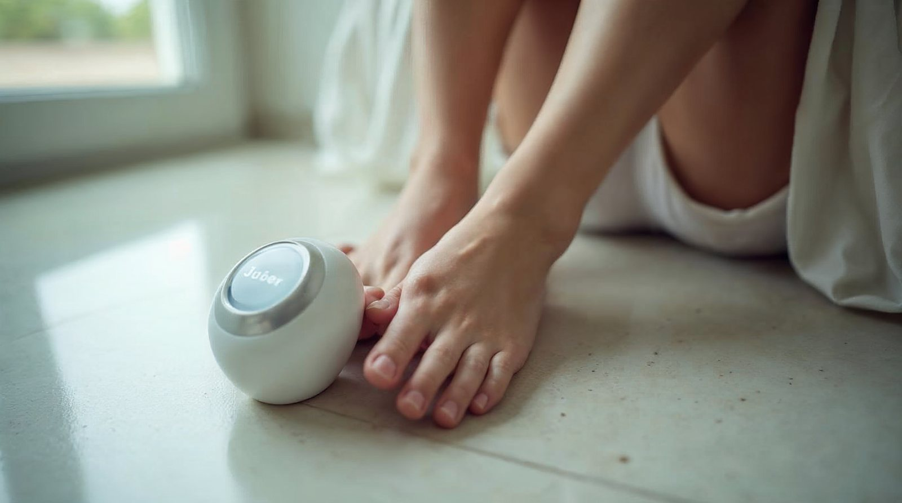
인바디는 아침에 재는 게 좋을까요, 저녁에 재는 게 좋을까요?
인바디는 언제 재는지보다 매번 같은 조건으로 재는 것이 더 중요해, 비슷한 시간대에 든든한 식사 직후를 피하고 화장실을 다녀온 뒤 재면 결과를 서로 비교하기 쉽습니다.
수정 2026-11-26
당화혈색소 검사를 하는 날 무엇을 준비하면 좋을까요?
당화혈색소는 최근 2~3개월의 평균적인 혈당 흐름을 반영하는 수치라 준비의 핵심은 기록입니다. 금식 여부는 방문 전 전화로 확인하시고, 복용 중인 약과 이전 검진 결과를 가져오시면 흐름을 이어서 보기 쉽습니다.
수정 2026-11-26

추운 아침마다 혈압이 높게 나올 때 집에서는 어떻게 재고 기록하나요?
겨울 아침에는 혈압이 평소보다 높게 재어지는 분이 있어, 재는 시각과 자세, 복용 중인 약을 먼저 묻고 같은 조건으로 재어 기록하는 방법을 함께 정리합니다.
수정 2026-11-26
다른 병원 혈액검사 결과는 어떤 형태로 가져가면 좋을까요?
다른 병원이나 검진기관의 혈액검사 결과는 종이 결과지, 휴대폰 앱 화면, 사진 어느 것이든 괜찮고, 검사 날짜와 기준치가 함께 보이게 준비하시면 흐름을 이어서 보기 쉽습니다.
수정 2026-11-26
낮에는 끼니를 거르다 밤에 몰아 먹는 수험생은 무엇을 점검하나요?
낮에 끼니를 거르고 밤에 몰아 먹는다면 점심을 간단히라도 챙기고 오후 간식으로 허기를 나누며 잠들기 3시간 전에 식사를 마치는 것부터 시작하고, 체중이 출렁이면 식사와 잠의 리듬을 함께 살핍니다.
수정 2026-11-26
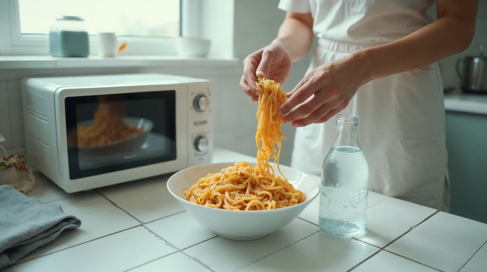
자취하며 편의점 음식으로 끼니를 때우다 체중과 검진 수치가 걱정될 때는 어떻게 살피나요?
혼자 살며 도시락, 라면, 삼각김밥으로 끼니를 해결하면 짠 음식과 단 음료는 늘고 채소와 단백질은 부족해지기 쉬워, 하루 식사 내용과 시간, 검진 결과를 먼저 함께 보고 편의점 안에서도 고를 수 있는 조합을 정리합니다.
수정 2026-11-26

혈압이 높다는 말을 듣고 동네 언덕길 걷기를 시작하려 할 때는 무엇을 먼저 확인하나요?
혈압이 높은 분이 언덕길 걷기를 시작할 때는 걷는 강도와 시간, 복용 중인 약, 걷는 중 불편한 신호를 먼저 확인하고, 평지에서 시작해 몸 상태를 보며 조금씩 늘리는 방법을 함께 정리합니다.
수정 2026-11-26
야근할 때마다 책상 서랍 간식에 자꾸 손이 갈 때는 어떻게 살피나요?
야근할 때마다 서랍 간식에 손이 간다면 야근 예정일에는 오후 6~7시 사이에 간단히라도 저녁을 먹고, 간식은 양을 정하기 쉬운 것으로 바꾸며 손이 갈 때 물 한 잔과 잠깐 걷기부터 해 보시기를 권합니다.
수정 2026-11-26

편의점 도시락·라면으로 끼니를 때우는 날이 많을 때는 무엇부터 바꿔 볼까요?
편의점 도시락과 라면으로 끼니를 때우는 날이 많다면 메뉴를 한 번에 바꾸기보다 라면 국물을 남기고 단백질이나 채소 한 가지를 더하며 단 음료를 물로 바꾸는 것부터 시작하시기를 권합니다.
수정 2026-11-26
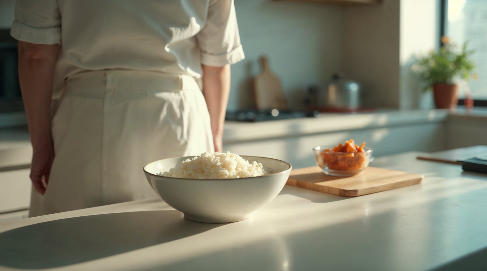
중앙대·숭실대 근처 자취방에서 혼자 밥을 해 먹을 때 식사 리듬은 어떻게 잡나요?
자취하며 혼자 밥을 해 먹을 때는 수업이 없는 날에도 첫 끼 시각을 정해 두고, 밥을 한 번에 지어 나눠 얼리며 밤 11시 이후에는 가벼운 것으로 바꾸는 것부터 식사 리듬을 잡아 보시기를 권합니다.
수정 2026-11-26

체중이 더 이상 줄지 않는 정체기에는 무엇을 먼저 점검하나요?
체중 정체기에는 숫자 하나보다 식사 시간과 순서, 잠, 활동량, 스트레스가 처음과 어떻게 달라졌는지를 먼저 점검하고 복용 약과 검진 수치를 함께 확인하며 무리한 절식은 권하지 않습니다.
수정 2026-11-27

인바디에서 체수분이나 부종 항목이 신경 쓰일 때는요?
체수분과 부종 관련 수치는 짠 음식, 오래 서 있거나 앉아 있기, 잠, 생리 주기에 따라 달라질 수 있어, 붓는 시간대와 부위를 먼저 묻고 오래가거나 다른 증상이 있으면 내과 검사를 안내합니다.
수정 2026-11-26

인바디 결과지는 어디부터 보면 되나요?
인바디 결과지는 체중 한 줄보다 체수분·근육량·체지방이 어떻게 이루어져 있는지 보는 표라서, 지난 결과와 비교해 어느 칸이 달라졌는지부터 읽으면 이해가 쉽습니다.
수정 2026-11-26
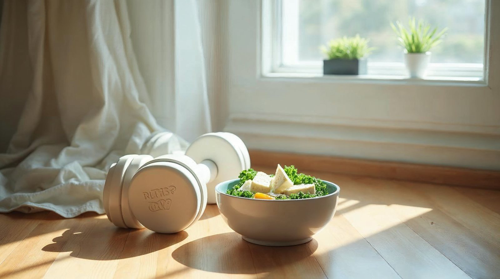
체중은 정상인데 인바디에서 근육량이 적게 나왔다면 무엇부터 살피나요?
체중이 정상 범위여도 근육량이 적고 체지방 비율이 높게 나올 수 있어, 끼니별 단백질과 하루 활동량, 잠과 피로를 먼저 묻고 생활 속에서 근육을 쓰는 방법부터 함께 찾습니다.
수정 2026-11-26
뱃살이 걱정될 때 인바디 기록은 어떻게 활용하나요?
뱃살 걱정은 체중보다 복부 지방과 생활 리듬의 문제인 경우가 많아, 허리둘레와 인바디 기록을 몇 주 간격으로 비교하며 저녁 시각·야식·술·잠·앉아 있는 시간을 함께 점검합니다.
수정 2026-11-26

인바디 검사 전에는 무엇을 준비하면 되나요?
체성분 검사는 몸속 수분 상태에 따라 수치가 달라질 수 있어, 검사 전 식사와 운동·사우나, 화장실, 금속 장신구, 몸속 전자 의료기기와 임신 여부를 먼저 확인합니다.
수정 2026-11-26

건강검진에서 중성지방이 높다고 했을 때 무엇을 알아두면 좋을까요?
건강검진에서 중성지방이 높게 나오면 검사 전 금식과 전날 음주를 먼저 확인하고 술, 단 음식, 체중, 활동량을 점검하며 재검과 내과 진료를 함께 안내하고 복용 약은 임의로 중단하지 않습니다.
수정 2026-11-26
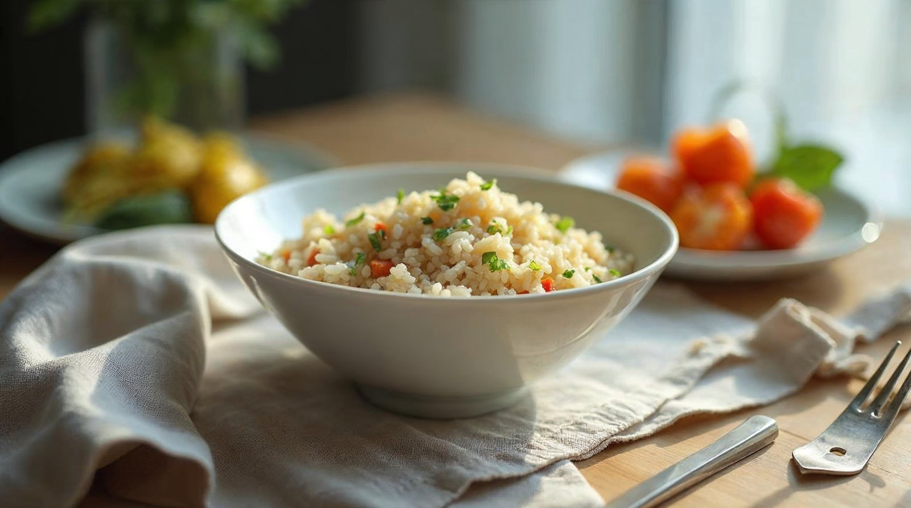
당화혈색소(HbA1c) 수치는 무엇을 뜻하나요?
당화혈색소는 최근 2~3개월의 평균적인 혈당 흐름을 반영하는 수치라서 하루 혈당보다 생활 리듬의 결과를 보는 참고 자료로 쓰이며, 진단과 약 처방은 내과 진료가 필요합니다.
수정 2026-11-26
피곤함이 오래가면 혈액검사가 필요한가요?
잠과 식사를 챙겨도 피곤함이 몇 주 넘게 이어지거나 체중 감소·숨참·어지럼·심한 추위 타기가 함께 있다면, 생활 리듬을 살피면서 혈액검사로 빈혈·갑상선·혈당 같은 원인이 없는지 확인해 보시길 권합니다. 숨이 차서 쓰러질 것 같거나 가슴 통증이 있으면 가까운 응급실을 먼저 찾으세요.
수정 2026-11-26

운전하는 직업으로 차 안 간식과 불규칙한 끼니가 반복될 때는 어떻게 조절하나요?
운전 중 졸음을 쫓으려 단 음료와 간식을 자주 먹고 끼니가 불규칙해지면 체중과 혈당 관리가 어려워질 수 있어, 간식의 종류와 식사 시각부터 함께 살핍니다.
수정 2026-11-26

다이어트 상담에서는 무엇을 확인하나요?
다이어트 상담에서는 체중 숫자보다 식사 패턴, 식욕, 잠, 활동량, 복용 중인 약과 검진 수치를 함께 확인하고, 필요하다고 판단될 때 인바디로 몸의 구성을 살핀 뒤 무리하지 않는 목표를 정합니다.
수정 2026-11-26

콜레스테롤과 중성지방 수치가 높게 나오면 생활에서 무엇부터 보나요?
먼저 검사 전날의 식사·술과 공복 시간을 확인하고, 일주일의 술자리·저녁 식사·간식·걷는 시간과 가족력을 차례로 살핍니다. 약이 필요한지는 내과에서 판단하며, 가슴이 조이듯 아프거나 한쪽 팔다리에 힘이 빠지면 바로 가까운 응급실로 가세요.
수정 2026-11-26
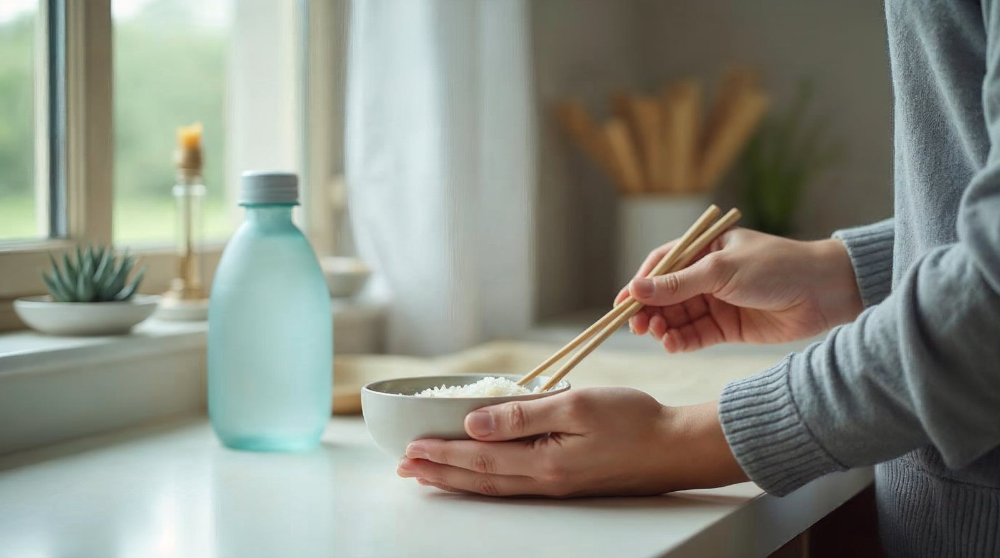
공복혈당이 경계 수준이라고 들었을 때 생활에서 무엇을 살펴보나요?
공복혈당이 경계 수준이라는 안내를 받으면 식사 시간과 순서, 단 음료, 활동량, 체중, 잠을 먼저 점검하고 정기 재검과 내과 진료를 함께 챙기며, 갈증과 소변량 증가가 있으면 병원 진료를 먼저 권합니다.
수정 2026-11-26
건강검진 혈액검사 결과지를 가져가면 무엇을 같이 보나요?
혈액검사 결과지에는 간 기능, 지질, 혈당, 신장 기능, 빈혈 수치 등 여러 항목이 있어, 지난해와 달라진 항목과 지금의 생활·증상을 함께 보고 진단이나 약이 필요해 보이면 해당 진료과를 안내합니다.
수정 2026-11-26

짠 음식과 국물을 좋아하는 습관은 혈압과 어떤 관련이 있나요?
짠 음식과 국물, 가공식품을 자주 먹는 습관은 혈압과 관련될 수 있어 식사 모습을 일상의 말로 묻고 국물 남기기와 양념 줄이기 같은 현실적인 방법을 안내하며 혈압약은 임의로 중단하지 않습니다.
수정 2026-11-26

건강검진 결과지에서 대사증후군은 어떤 항목을 보나요?
대사증후군은 허리둘레, 혈압, 공복혈당, 중성지방, HDL 콜레스테롤 다섯 가지 가운데 세 가지 이상이 기준을 벗어난 상태이며 기준은 지침에 따라 다를 수 있어 검진 결과지의 안내와 의사의 설명을 우선합니다.
수정 2026-11-26

당뇨 전단계라고 들었을 때 식사 순서와 간식은 어떻게 살피나요?
당뇨 전단계라는 안내를 받으면 식사 시간과 순서, 단 음료와 간식, 활동량을 일상의 말로 묻고 채소를 먼저 먹는 식사 순서와 식후 걷기 같은 현실적인 방법을 안내하며 정기 재검과 내과 진료를 함께 권합니다.
수정 2026-11-26
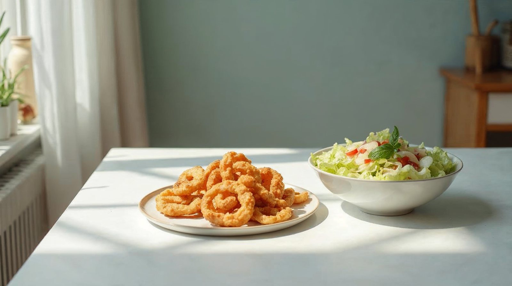
체중은 보통인데 복부 지방이 걱정될 때는 어떤 검진을 보나요?
체중이 정상이어도 배 둘레와 혈당·지질 수치가 기준을 넘거나 근육량이 적을 수 있어, 검진 결과지의 허리둘레와 혈압·혈당·지질 항목을 함께 확인해 보도록 안내합니다.
수정 2026-11-26

혈압약·당뇨약을 먹고 있다면 다이어트 상담 전에 무엇을 알려야 하나요?
혈압약·당뇨약은 임의로 줄이거나 끊지 말고, 약 이름과 용량, 지병, 최근 검진 결과를 먼저 알려 주세요. 일부 약재는 두근거림·불면이 생길 수 있고 식사가 줄면 혈당이 떨어질 수 있어, 복용 약을 확인한 뒤 신중하게 정합니다.
수정 2026-11-26
야식을 끊기 어려울 때는 어떤 점을 먼저 살펴보나요?
야식을 끊기 어려울 때는 의지만 탓하기보다 저녁 식사 시간과 양, 잠드는 시각, 진짜 허기와 스트레스성 허기의 구분을 먼저 살피고 생활 리듬을 조금씩 조정합니다.
수정 2026-11-26
대사 관리를 할 때 물은 하루에 얼마나 마셔야 하나요?
물은 정해진 리터 수보다 갈증, 소변 색, 활동량, 날씨, 식사를 보며 하루 동안 나누어 마시는 것이 기본입니다. 심장·콩팥 질환이나 부종으로 수분 제한을 받는 분은 담당 의사 지시를 먼저 따릅니다.
수정 2026-11-26

명절 음식을 과식하지 않으려면 어떻게 하면 좋을까요?
명절과 모임 음식은 먹고 싶은 음식과 술의 양을 미리 정하고 채소와 단백질을 먼저 먹으면 부담을 줄일 수 있으며, 다음 날은 굶기보다 평소 식사로 돌아가는 것이 중요합니다.
수정 2026-11-26

먹고 나서 자책이 들 때는 어떻게 마음을 살펴야 하나요?
먹고 나서 자책과 후회가 반복될 때는 자신을 탓하기보다 언제 어떤 마음일 때 먹게 되는지를 살피고 끼니를 규칙적으로 챙기는 일부터 함께 정합니다.
수정 2026-11-27
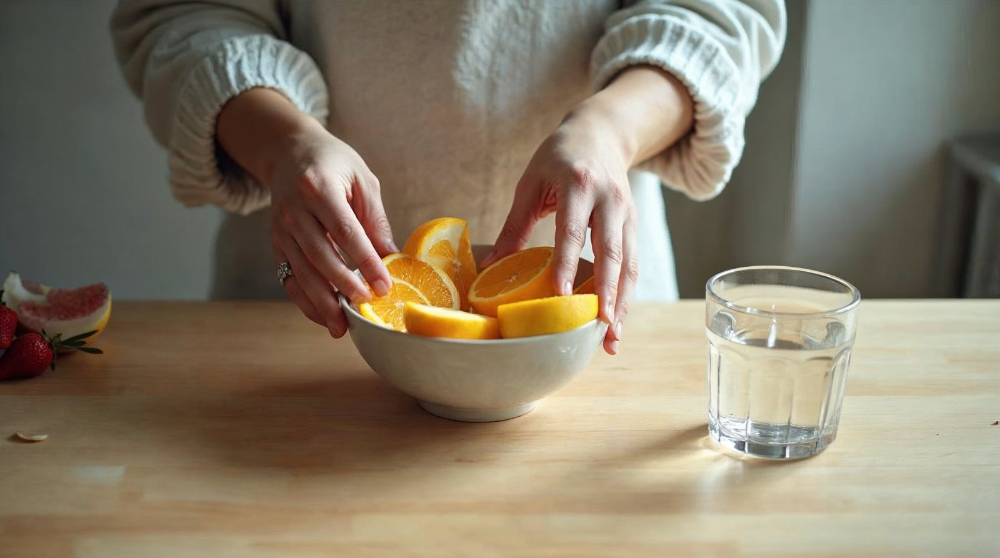
당이 걱정될 때 과일은 먹어도 되나요?
과일에는 당이 들어 있어 주스 대신 생과일로, 한 번에 한두 조각씩 식사의 일부로 먹는 방법부터 권합니다. 당뇨약이나 인슐린을 쓰는 분은 과일 양과 시간을 처방한 의사와 상의합니다.
수정 2026-11-26
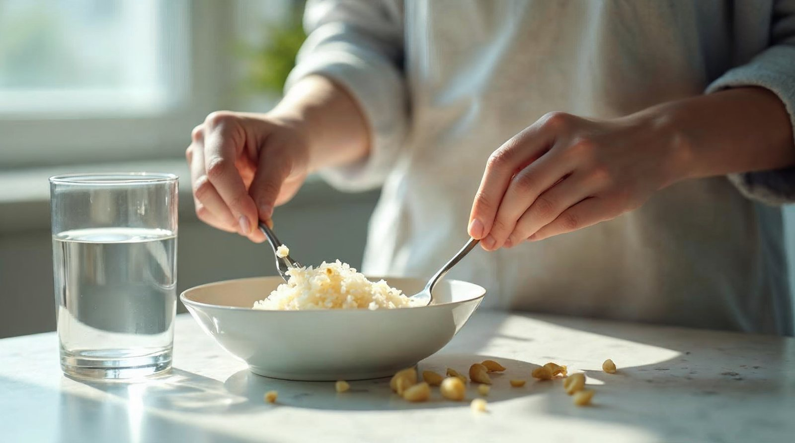
진짜 배고픔과 가짜 허기는 어떻게 구분해서 살피나요?
진짜 배고픔은 서서히 오고 무엇이든 먹을 수 있지만, 가짜 허기는 갑자기 오고 특정 음식이 당기는 경우가 많아, 먹고 싶은 순간의 상황과 감정을 함께 살펴보도록 안내합니다.
수정 2026-11-26

시험 당일 아침 식사와 카페인은 어떻게 계획하면 되나요?
시험 당일 아침에는 평소 먹어 본 가벼운 식사와 평소 마시던 정도의 카페인으로 속을 편하게 두는 것이 기본이며, 새로운 음식이나 음료는 피하도록 안내합니다.
수정 2026-11-26

물을 마셔도 갈증이 계속될 때는 어떻게 하나요?
물을 자주 마셔도 갈증이 가시지 않고 소변이 늘면 당뇨 등을 확인하는 내과 혈액 검사를 먼저 권하며, 한의원에서는 식사와 땀, 생활 습관을 함께 살핍니다.
수정 2026-11-26

폭식 충동이 올 때는 어떤 점을 먼저 살펴보나요?
갑자기 한꺼번에 먹게 되는 폭식 충동은 의지만의 문제로 보기 어려워서, 굶은 시간과 수면, 스트레스, 식사 간격을 먼저 묻고 생활 리듬과 함께 살핍니다.
수정 2026-11-27